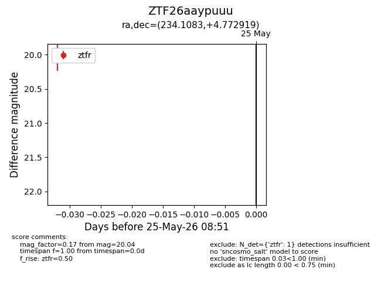
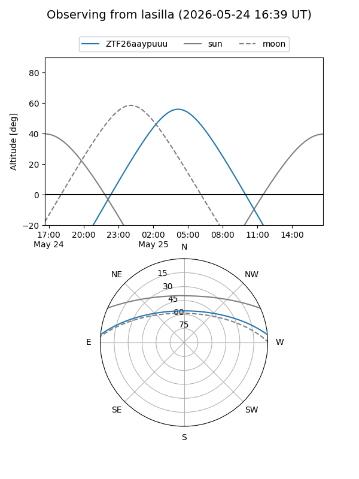
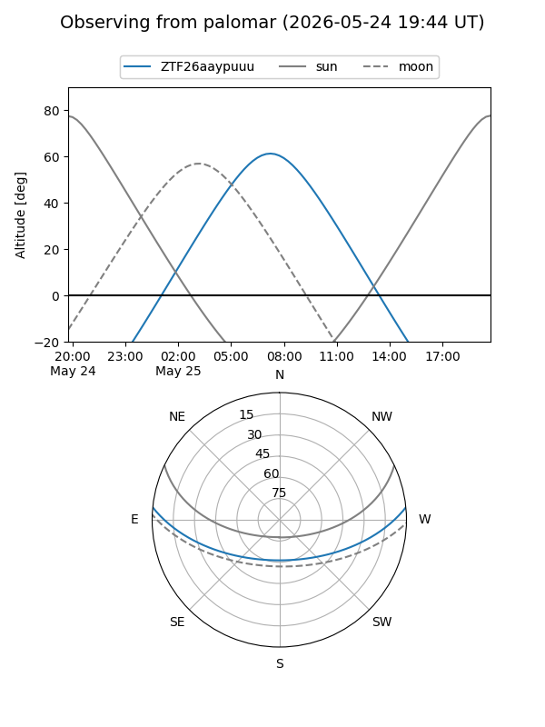

ZTF26aaypuuu
Target ZTF26aaypuuu at 2026-05-25 08:53
Aliases and brokers:
lsst-FINK: link
lsst-Lasair: link
lsst-ALeRCE: link
ztf-FINK: link
ztf-Lasair: link
ztf-ALeRCE: link
alt names
ZTF26aaypuuu (ztf,fink_ztf)
Coordinates:
equatorial (ra, dec) = 234.1083,+4.77292
equatorial (HMS+DMS) = 15:36:25.99,+04:46:22.51
galactic (l, b) = (10.7726,+44.81024)
Flags:
Photometry:
last ztfr=20.04
1 ztfr detections
Lightcurve

Visibility


Additional plots